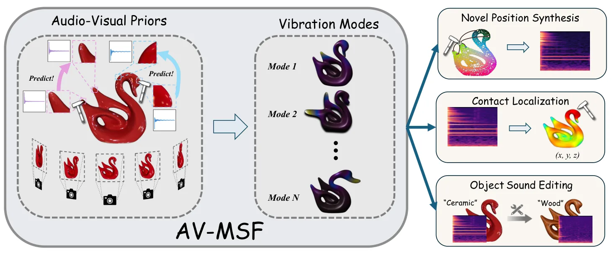
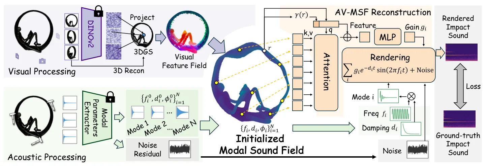

物体作为视听模态声场Objects as Audio-Visual Modal Sound Fields
三维重建与 3DGS 方法新颖，接触定位提供邻近机器人价值；核心任务是声学渲染而非 SLAM 或几何定位。
一句话工作总结
以 3DGS 几何先验和少量撞击录音重建物体声场，把三维表示扩展到接触定位与交互声学。
摘要
Audio-Visual Modal Sound Field 从多视图图像和少量撞击录音重建物体级声学表示。方法以结合稠密三维视觉特征的 3D Gaussian Splatting 提供几何先验，再用紧凑且具有物理意义的模态参数表示撞击声场，从而支持 few-shot reconstruction。两个真实数据集上的实验显示其撞击声渲染优于物理和数据驱动基线，并可用于接触定位和物体声音编辑。
While modern 3D reconstruction excels at modeling object geometry and appearance, it largely ignores the rich acoustic cues revealed through physical interaction. Object impact sounds convey material, stiffness, and structural properties that complement vision, yet existing impact sound modeling approaches either rely on expensive physics-based simulation or require large datasets to generalize in a purely data-driven manner. We introduce Audio-Visual Modal Sound Field (AV-MSF), a novel object-level acoustic representation reconstructed from multi-view images and only a few impact sound recordings. AV-MSF builds on 3D Gaussian Splatting integrated with dense 3D visual feature to provide a strong geometry-aware prior, and represents the impact sound field using compact, physically meaningful modal parameters, enabling robust few-shot reconstruction. Experiments on two real-world datasets show that AV-MSF achieves state-of-the-art impact sound rendering, outperforming both physics-based and data-driven baselines. Furthermore, we demonstrate downstream applications enabled by our representation, including contact localization and object sound editing.
中文解读摘录
- 原题：Swimm3R: Splatting with Medium-aware SfM for Underwater 3D Reconstruction
- 作者：Minseong Kweon, Junaed Sattar
- 推荐评分：9.2/10
- 核心方法：把空气中几何先验蒸馏到前馈骨干，并用物理 head 联合回归水下成像参数、相机位姿和恢复点云；随后用带 Beta primitives 与散射感知几何梯度的 Underwater Beta Splatting 表示场景。
- 为何值得看：它不是单纯先增强图像再做 SfM，而是把散射、衰减、位姿和几何放进统一框架。论文报告相对 WaterSplatting 平均 PSNR 提升 1.47 dB，RRA@15/RTA@15 分别提高 2.0/2.4 个百分点；需进一步检查 Barbados 数据集规模、跨水体泛化和绝对尺度。
图表/页面预览
{kind=link}

{kind=link}
